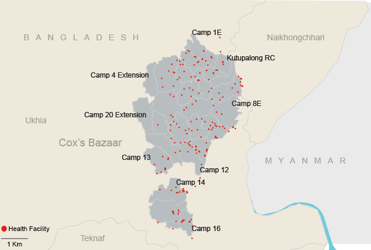
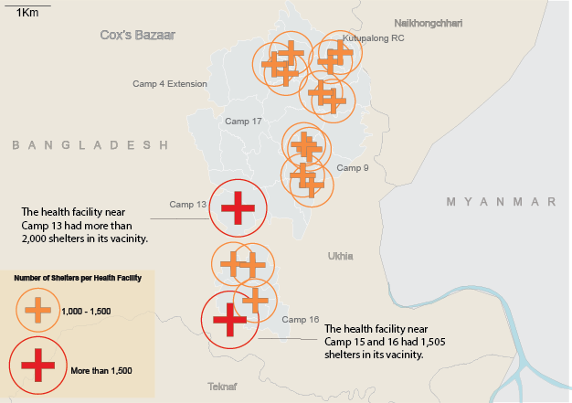

Rohingya Refugees
BY Tekendra Parmar
Published December 4, 2018
Rohingya refugee camps are some of the most populated refugee camps in the world. With over 700,000 people fleeing from Myanmar into Bangladesh as of September 2018, refugees live in makeshift shanties in Cox's Bazaar. The Kutapalong Camp, with a population over 500,000 people, makes it one of the world's largest refugee camps in the world.
Current Facilities are Woefully Inadequete
NGOs have stated that the current facilities are overtaxed by the growing population and inadequate to meet the population's current needs. The close quarters of camps have a potential for disease outbreaks and current sanitation facilities are woefully inadequete to cope with the growing population.
Population Density of Kutapalong Camp
Kutapalong is one of most populated refugee camps in the world.
NOTE: World Health Organization Population Stats as of September 2018.
SOURCE: World Health Organization
Refugees live in close quarters in make-shift shelters made of tin, bamboo and tarp. This past November, Bangladesh delayed sending refugees back to Myanmar after intense criticism from human rights organizations. The above map shows population density of the main Kutapalong camp. Kutapalong accounts for more than half the refugee population in Bangladesh. In some camps, refugees have only 10 square meters per person.
According to UNHCR, a majority of this population is aged around 18 to 59. According to Daphnee Cook, communications manager of Save the Children in Cox's Bazaar, NGOs are preparing for long-term settlement of the camps in Cox's Bazaar.
Rohingya Population by Settlement Type
Most Rohingya refugees in Bangladesh live in isolated communities like the refugee camps above.
NOTE: World Health Organization Statistics as of September 2018.
SOURCE: World Health Organization
Latrine Facilities Are Overcrowded
A lack of proper sanitation facilities is also a huge problem for refugee camps: In some areas, more than 240 refugees may use a single latrine facility. This raises the risk of various diseases including cholera, polio, and diarrheal-related illnesses. According to the World Health Organization, accute watery diarrhea is the second most frequent reason refugees visted medical facilities followed by respiratory illness.
Number of People Per Latrine
Latrines in some facilities may have hundreds of occupents in a day.
NOTE: World Health Organization Statistics as of September 2018.
SOURCE: World Health Organization
Number of Bathrooms
Female bathrooms account for less than 15 percent of the latrines in the camps.
NOTE: World Health Organization Statistics as of September 2018.
SOURCE: World Health Organization
The high number of people per latrine facility is exacerbated by the fact that less than 15 percent of these facilities were female only although women make up a near majority of the camp population accounting for 52 percent of the camp population, according to UNHCR.
Number of Health Facilities
There are around 200 health facilities in or near Kutapalong camp.
NOTE: World Health Organization Statistics as of September 2018.
SOURCE: World Health Organization
Number of People per Health Facility
Doctors warn health facilities are inadequete to keep up with current population
NOTE: World Health Organization Statistics as of September 2018.
SOURCE: World Health Organization
According to IOM, severe funding shortages are hurting healthcare response in the refugee camps. According to Iftekar Mahmoud, director of the HOPE Foundation, doctors in Hope's facilities can expect to see around 50 patients per day. Using data on the location of hospitals alongside maps of major roads, I found that most facilities were not immediately accessable by car-carrying roads. Out of the 200 facilities in the camps, 31 facilities were 700 meters away from a major road. The average health facility is around 500 meters from a major roadway.
Healthcare providers have been working pre-emptively to prevent outbreaks of diseases. This past November 330,000 refugees were vaccinated against cholera. As of 19 November, the United Nation's Office for the Coordination of Humnitarian Affairs's reported their appeal for funding was 71 per cent funded allowing for much needed funding for medical, nutrition, and sanitiation facilities.